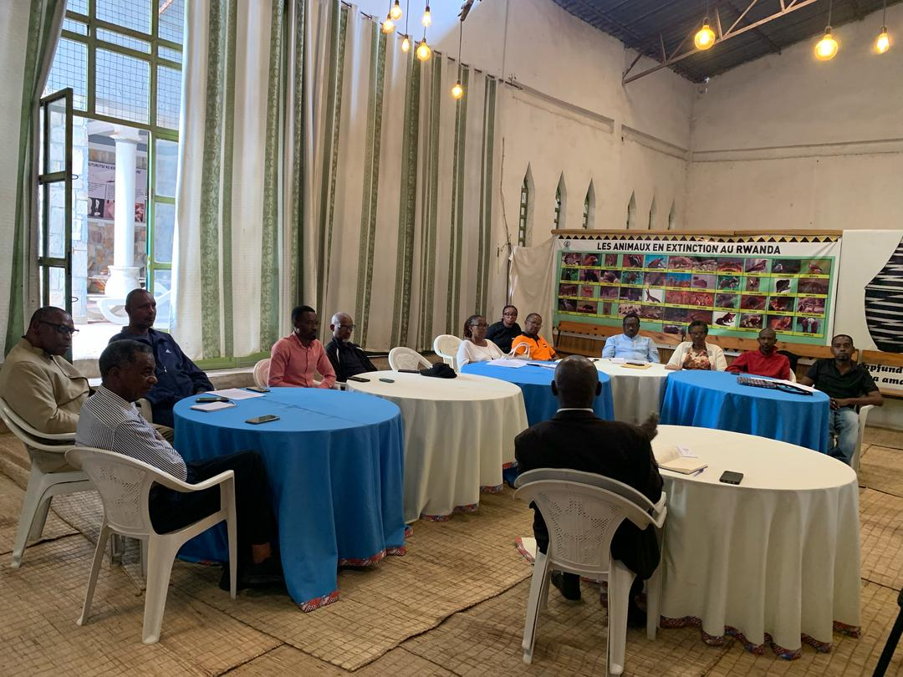
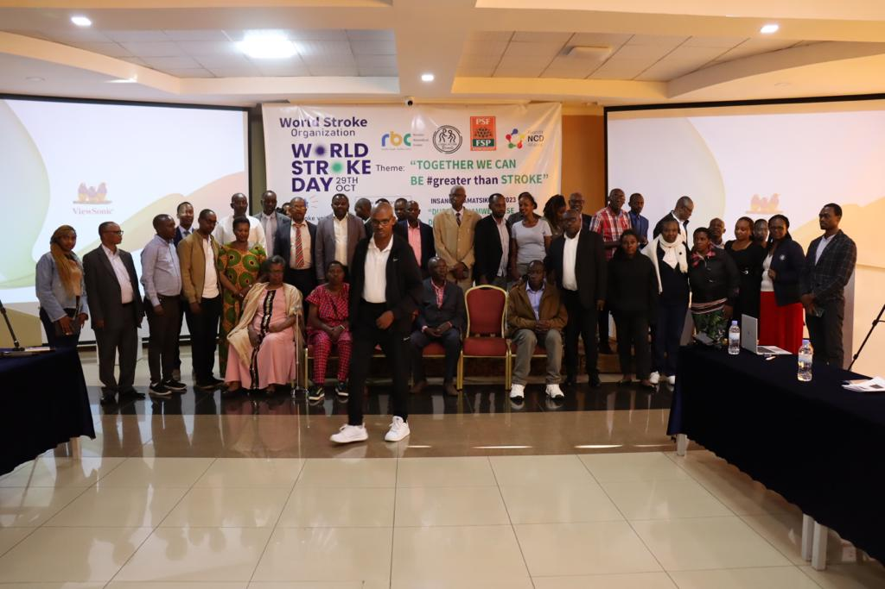
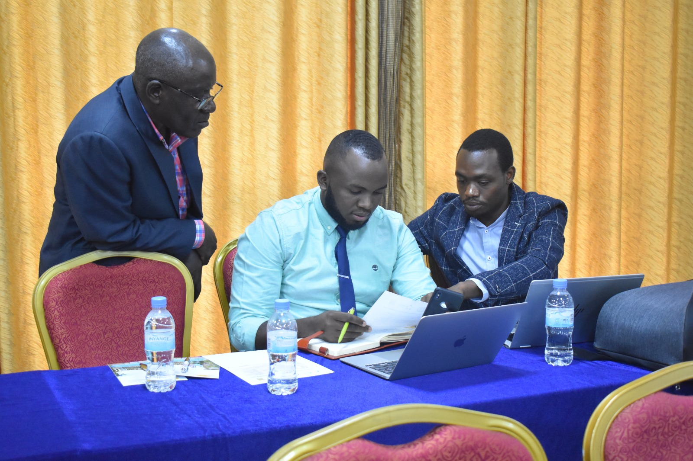

My Stroke Journey: A Story of Survival and Resilience
My name is Alexia Uwajeneza, and I am 46 years old. I have been living with the effects of a stroke for more than 12.5
Read Full Story →Personal stories from stroke survivors, caregivers, and health workers highlighting resilience, recovery, and hope.

My name is Alexia Uwajeneza, and I am 46 years old. I have been living with the effects of a stroke for more than 12.5
Read Full Story →
Akimanizanye Epiphanie, In March 2020, my husband suffered a stroke, and since then I have served as his primary caregiver.
Read Full Story →I'm Jean Paul Hakizimana, a senior Physiotherapist with more than 10yrs experience working in clinical services with stroke patients.
Read Full Story →Watch our latest awareness campaigns and community outreach activities in action.


